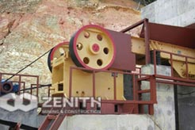
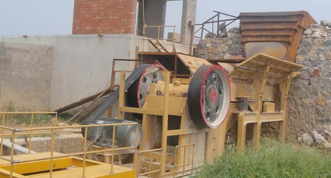

Jaw Crusher For Sale In India
This series of jaw crusher in india for sale can reach the crushing ratio of 4-6 and the shape of final product is even. They are widely applied to crush high hardness, mid hardness and soft rocks and ores such as slag, construction materials, marble, etc. The pressure resistance strength is under 200Mpa, that is, suitable for primary crush. Jaw crushing equipment can be used in mining, metallurgical industry, construction, road and railway building, conversancy, chemistry, etc.There are some suppliers of jaw crusher machines as well as other mining machines in India. The demands of crushing machines are increased slowly in this country as well. Usually, the jaw crusher machines are used for processing various minerals in mining industry.
Working Principle of Jaw Crusher
The motor drives the belts and the belt wheels, and make the movable jaw up and down by the eccentric shaft. When the movable jaw descends, the angle between the fixed jaw and the movable jaw becomes smaller, and the materials can be crushed; when the movable jaw rises, the between the fixed jaw and the movable jaw becomes bigger; and the movable jaw plate leaves from the fixed jaw by the function of the tension rod and the spring. And then the crushed materials are discharged from the lower outlet of the crushing cavity.
Jaw Crusher Features
- Firm structure, stable performance, large capacity, even producing granularity.
- With the increase of production, our jaw crusher can greatly reduce the operating costs.
- Convenient maintenance and economical running expense.
- The large feed opening and forcefeeding action from the inward and downward eccentric movement of the swing jaw meanthat our jaw crusher can increase the capacity.
Jaw Crushers For Sale In India
Although the mining industry has been developed slowly in India, the demands of jaw crusher and other crusher machines are increased slightly. The sale of jaw crushers in India is very popular. There are many suppliers and manufacturers of jaw crusher machines in mining equipment manufacturing industry in India. Shanghai Zenith Company is one of the famous suppliers in this country.
Jaw crusher in india for sale, Our stone crushing equipment can match German technology. Shibang Zenith Company is a professional manufacturer of jaw crusher in india for sale and industrial grinding mills, located in beautiful Pudong New District, with factory area of more than 90,000 square meters. Since that time, the company has grown to become one of the largest suppliers of crushing and screening equipment, consumables and spare parts, serving markets in China, South East Asia, Africa and the Middle East.